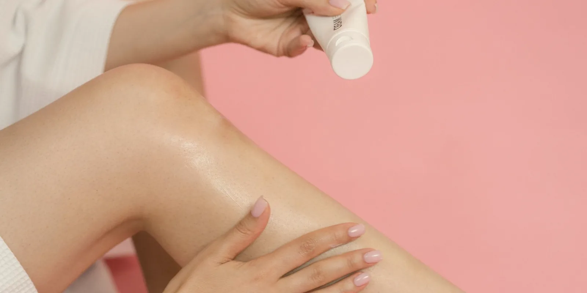

Escleroterapia vs láser para várices: ¿cuál elegir?
Si tu especialista te habló de escleroterapia y de láser para tratar tus várices o arañitas vasculares, es normal que no sepas cuál es la mejor opción. Aquí te explicamos, con calma, en qué se parecen estos dos tratamientos, en qué se diferencian y qué se toma en cuenta para recomendarte uno u otro.

Elegir entre escleroterapia vs láser para várices es una de las dudas más frecuentes cuando decides tratar tus venas. Ambos son procedimientos ambulatorios y mínimamente invasivos, usados desde hace años en todo el mundo, pero no funcionan igual ni sirven para el mismo tipo de vena. Conocer sus diferencias te ayuda a entender mejor la recomendación de tu especialista y a llegar con preguntas más claras a tu valoración.
¿Qué tienen en común la escleroterapia y el láser?
Los dos buscan lo mismo: cerrar la vena que ya no funciona bien para que el cuerpo la reabsorba con el tiempo, mientras la sangre se redirige hacia venas sanas cercanas. Son procedimientos que suelen hacerse en consulta, sin hospitalización, y en muchos casos permiten volver a las actividades habituales el mismo día o al siguiente. También comparten algo importante: casi siempre se necesita más de una sesión, y el resultado se nota de forma progresiva en las semanas posteriores, no de inmediato.
Escleroterapia vs láser para várices: ¿en qué se diferencian?
Cómo actúa cada uno
La escleroterapia consiste en inyectar, con una aguja muy fina, una solución esclerosante dentro de la vena. Esa solución irrita la pared interna y hace que se pegue sobre sí misma hasta cerrarse. Si quieres profundizar en este procedimiento, te lo contamos paso a paso en Escleroterapia: en qué consiste el tratamiento de várices.
El láser, en cambio, usa energía lumínica que se convierte en calor para sellar la vena desde dentro. Existen dos formas principales. El láser endovenoso (también llamado EVLA o EVLT) introduce una fibra muy delgada dentro de la vena, guiada por ecografía. El láser transdérmico se aplica sobre la piel, sin necesidad de ninguna aguja.
¿Para qué tipo de venas es mejor cada uno?
- Escleroterapia: suele ser la primera opción para arañitas vasculares (telangiectasias) y várices pequeñas o medianas y superficiales.
- Láser endovenoso: se usa sobre todo para várices más grandes o troncales, y para venas más profundas cuyas válvulas ya no cierran bien; es una alternativa menos invasiva que la cirugía tradicional de retirar la vena.
- Láser transdérmico: puede ser útil para arañitas muy finas, en ocasiones demasiado pequeñas para entrar con aguja, o para quien prefiere evitar las inyecciones.
En general, muchos especialistas siguen prefiriendo la escleroterapia para arañitas vasculares, porque con la aguja se puede tratar un rango más amplio de tipos de vena. El láser endovenoso, por su parte, es hoy una opción de primera línea para várices grandes relacionadas con insuficiencia venosa. Puedes leer más sobre las alternativas disponibles en Tratamiento de várices sin cirugía: por qué aparecen y cómo se tratan.
El procedimiento, el dolor y las sesiones necesarias
En la escleroterapia, el especialista inyecta la solución vena por vena y, al final, coloca un vendaje o una media de compresión. Cada sesión dura entre 15 y 45 minutos, casi no requiere anestesia y produce un ardor breve en cada pinchazo. En el láser endovenoso, primero se hace un eco doppler para ubicar la vena y se aplica anestesia local o tumescente. Luego se introduce la fibra láser, guiada por ecografía, hasta sellar la vena de un extremo a otro: puedes notar presión o calor leve, pero no dolor intenso. En el láser transdérmico, el equipo se pasa sobre la piel con pequeños pinchazos de calor, a veces con un sistema de enfriamiento simultáneo.
La escleroterapia y el láser transdérmico suelen necesitar entre una y tres sesiones, según la cantidad de venas. El láser endovenoso, en cambio, suele tratar la vena principal en una sola sesión, aunque puede requerirse más de un procedimiento si hay varias venas comprometidas.
Recuperación y cuidados después del procedimiento
La recuperación suele ser rápida en ambos casos: la mayoría retoma sus actividades cotidianas en 24 a 48 horas. Algunas recomendaciones habituales son:
- Caminar poco después del procedimiento para favorecer la circulación.
- Usar las medias de compresión indicadas por tu especialista.
- Evitar el sol directo sobre la zona tratada y los esfuerzos intensos los primeros días.
Ni la escleroterapia ni el láser cambian la tendencia natural de cada persona a formar nuevas várices; ambos tratan las venas ya existentes. Por eso, más que preguntarte cuál es "mejor" en general, vale la pena preguntar cuál es más adecuado para el tipo de vena que tienes.
Efectos secundarios y riesgos más frecuentes
Los dos se consideran tratamientos seguros cuando los realiza un profesional capacitado, aunque cada uno tiene sus propios efectos posibles:
- Escleroterapia: moretones alrededor de las zonas inyectadas, enrojecimiento, picazón o pequeñas manchas oscuras en la piel que suelen desaparecer con las semanas.
- Láser endovenoso: moretones o molestia leve a lo largo del trayecto de la vena tratada, y sensación de dureza temporal.
- Láser transdérmico: enrojecimiento pasajero y, con menor frecuencia, ampollas, pequeñas quemaduras o cambios de color en la piel, sobre todo si no se sigue bien el cuidado posterior.
En casos poco frecuentes, cualquiera de los dos procedimientos puede asociarse a complicaciones como infección o formación de coágulos, por lo que siempre deben realizarse en un entorno clínico adecuado.
¿Cómo se decide cuál conviene en tu caso?
No hay una respuesta única: la decisión depende del tamaño y la profundidad de la vena, de si hay una insuficiencia venosa de fondo, de tu tipo de piel y de tus síntomas. Por eso, esta elección siempre la hace el especialista después de una valoración clínica, generalmente respaldada por un eco doppler de salud vascular. Nunca debe basarse en autodiagnóstico ni en lo que le funcionó a otra persona, porque cada sistema venoso es distinto.
En Seravena acompañamos ese proceso desde la primera valoración, para que entiendas qué está pasando en tus venas antes de decidir cualquier tratamiento. Si quieres resolver tus dudas, puedes agendar una valoración con nuestro equipo.
Preguntas frecuentes
¿Qué diferencia hay entre la escleroterapia y el láser para várices?
La escleroterapia inyecta una solución esclerosante dentro de la vena con una aguja muy fina, mientras que el láser usa calor para cerrarla: el láser endovenoso lo hace desde dentro, con una fibra guiada por ecografía, y el láser transdérmico lo hace desde la piel, sin agujas. La escleroterapia suele preferirse para arañitas y várices pequeñas o medianas, y el láser endovenoso para várices más grandes o profundas.
¿Cuál duele más, la escleroterapia o el láser para várices?
Ninguno suele ser muy doloroso. La escleroterapia produce un pequeño ardor o pinchazo breve con cada inyección y casi nunca requiere anestesia. El láser endovenoso se hace con anestesia local o tumescente, por lo que puedes sentir presión o calor leve, pero no dolor intenso durante el procedimiento.
¿El láser sirve para arañitas vasculares muy pequeñas?
Sí. El láser transdérmico puede ser útil para arañitas muy finas, en algunos casos demasiado pequeñas para entrar con una aguja, o para personas que prefieren evitar las inyecciones. Aun así, muchos especialistas siguen prefiriendo la escleroterapia para arañitas vasculares porque permite tratar más tipos de vena con buenos resultados.
¿Cuántas sesiones se necesitan de escleroterapia o láser?
Depende de cuántas venas tengas y de su tamaño. La escleroterapia y el láser transdérmico suelen requerir entre una y tres sesiones, mientras que el láser endovenoso a menudo trata cada vena principal en una sola sesión, aunque puede necesitarse más de un procedimiento si hay varias venas afectadas.